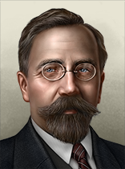
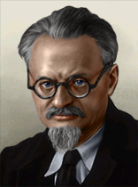

卡尔·拉狄克
Karl Radek
hof_portrait_SOV_karl_radek.dds
156 × 210 PNG叶夫根尼·普列奥布拉任斯基
Yevgeny Preobrazhensky
hof_portrait_SOV_yevgeny_preobrazhensky.dds
156 × 210 PNG伊瓦尔·斯米尔加
Ivar Smilga
hof_portrait_SOV_ivar_smilga.dds
156 × 210 PNG米哈伊尔·托姆斯基
Mikhail Tomsky
hof_portrait_SOV_mikhail_tomsky.dds
156 × 210 PNG马尔特米扬·里亚京
Martemyan Ryutin
hof_portrait_SOV_martemyan_ryutin.dds
156 × 210 PNG格里戈里·索柯里尼柯夫
Grigory Sokolnikov
hof_portrait_SOV_grigory_sokolnikov.dds
156 × 210 PNG亚历山大·施利亚普尼科夫
Aleksandr Shlyapnikov
hof_portrait_SOV_aleksandr_shlyapnikov.dds
156 × 210 PNG画风与构图参考


加米涅夫 / 托洛茨基
两张现有样本，仅作参考，未重画。
统一头肩构图、低饱和色彩和左上柔光。图像文件无文字、牢栏或档案纸。
交付说明 · 提示词与文件清单